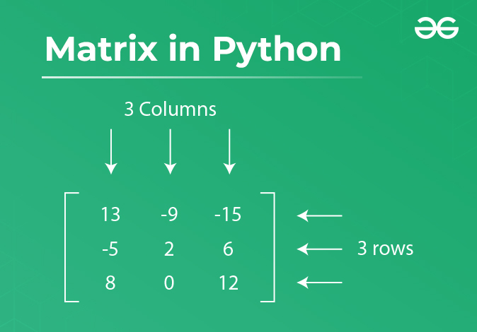

https://www.geeksforgeeks.org/python-matrix/
Last Updated :
06 Aug, 2024
Here we will discuss different ways how we can form a matrix using Python within this tutorial we will also discuss the various operation that can be performed on a matrix. we will also cover the external module Numpy to form a matrix and its operations in Python.
A matrix is a collection of numbers arranged in a rectangular array in rows and columns. In the fields of engineering, physics, statistics, and graphics, matrices are widely used to express picture rotations and other types of transformations.
The matrix is referred to as an m by n matrix, denoted by the symbol “m x n” if there are m rows and n columns.
Here, we are going to create a matrix using the list of lists.
matrix = [[1, 2, 3, 4],
[5, 6, 7, 8],
[9, 10, 11, 12]]
print("Matrix =", matrix)
Here, we are taking a number of rows and columns from the user and printing the Matrix.
Row = int(input("Enter the number of rows:"))
Column = int(input("Enter the number of columns:"))
# Initialize matrix
matrix = []
print("Enter the entries row wise:")
# For user input
# A for loop for row entries
for row in range(Row):
a = []
# A for loop for column entries
for column in range(Column):
a.append(int(input()))
matrix.append(a)
# For printing the matrix
for row in range(Row):
for column in range(Column):
print(matrix[row][column], end=" ")
print()
List comprehension is an elegant way to define and create a list in Python, we are using the range function for printing 4 rows and 4 columns.
matrix = [[column for column in range(4)] for row in range(4)] print(matrix)
Here we are replacing and assigning value to an individual cell (1 row and 1 column = 11) in the Matrix.
X = [[1, 2, 3], [4, 5, 6], [7, 8, 9]] row = column = 1 X[row][column] = 11 print(X)
Here we are replacing and assigning value to an individual cell (-2 row and -1 column = 21) in the Matrix.
row = -2 column = -1 X[row][column] = 21 print(X)
Here, we are accessing elements of a Matrix by passing its row and column.
print("Matrix at 1 row and 3 column=", X[0][2])
print("Matrix at 3 row and 3 column=", X[2][2])
Here, we are accessing elements of a Matrix by passing its row and column on negative indexing.
import numpy as np X = [[1, 2, 3], [4, 5, 6], [7, 8, 9]] print(X[-1][-2])
Example 1: Adding values to a matrix with a for loop in python
Here, we are adding two matrices using the Python for-loop.
# Program to add two matrices using nested loop
X = [[1, 2, 3],[4, 5, 6], [7, 8, 9]]
Y = [[9, 8, 7], [6, 5, 4], [3, 2, 1]]
result = [[0, 0, 0], [0, 0, 0], [0, 0, 0]]
# iterate through rows
for row in range(len(X)):
# iterate through columns
for column in range(len(X[0])):
result[row][column] = X[row][column]+ Y[row][column]
for r in result:
print(r)
Example 2: Adding and subtracting values to a matrix with list comprehension
Performing the Basic addition and subtraction using list comprehension.
Add_result = [[X[row][column] + Y[row][column]
for column in range(len(X[0]))]
for row in range(len(X))]
Sub_result = [[X[row][column] - Y[row][column]
for column in range(len(X[0]))]
for row in range(len(X))]
print("Matrix Addition")
for r in Add_result:
print(r)
print("\nMatrix Subtraction")
for r in Sub_result:
print(r)
Example 3: Python program to multiply and divide two matrices
Performing the Basic multiplication and division using Python loop.
rmatrix = [[0, 0, 0], [0, 0, 0], [0, 0, 0]]
for row in range(len(X)):
for column in range(len(X[0])):
rmatrix[row][column] = X[row][column] * Y[row][column]
print("Matrix Multiplication",)
for r in rmatrix:
print(r)
for i in range(len(X)):
for j in range(len(X[0])):
rmatrix[row][column] = X[row][column] // Y[row][column]
print("\nMatrix Division",)
for r in rmatrix:
print(r)
Example: Python Program to Transpose a Matrix using loop
Transpose of a matrix is obtained by changing rows to columns and columns to rows. In other words, transpose of A[][] is obtained by changing A[i][j] to A[j][i].
X = [[9, 8, 7], [6, 5, 4], [3, 2, 1]]
result = [[0, 0, 0], [0, 0, 0], [0, 0, 0]]
# iterate through rows
for row in range(len(X)):
# iterate through columns
for column in range(len(X[0])):
result[column][row] = X[row][column]
for r in result:
print(r)
# # Python Program to Transpose a Matrix using the list comprehension
# rez = [[X[column][row] for column in range(len(X))]
# for row in range(len(X[0]))]
# for row in rez:
# print(row)
Create a matrix using Numpy
Here we are creating a Numpy array using numpy.random and a random module.
import numpy as np # 1st argument --> numbers ranging from 0 to 9, # 2nd argument, row = 3, col = 3 array = np.random.randint(10, size=(3, 3)) print(array)
Here we are covering different mathematical operations such as addition subtraction, multiplication, and division using Numpy.
# initializing matrices
x = numpy.array([[1, 2], [4, 5]])
y = numpy.array([[7, 8], [9, 10]])
# using add() to add matrices
print ("The element wise addition of matrix is : ")
print (numpy.add(x,y))
# using subtract() to subtract matrices
print ("The element wise subtraction of matrix is : ")
print (numpy.subtract(x,y))
print ("The element wise multiplication of matrix is : ")
print (numpy.multiply(x,y))
# using divide() to divide matrices
print ("The element wise division of matrix is : ")
print (numpy.divide(x,y))
Here, we will find the inner, outer, and cross products of matrices and vectors using NumPy in Python.
X = [[1, 2, 3],[4, 5, 6],[7, 8, 9]]
Y = [[9, 8, 7], [6, 5, 4],[3, 2, 1]]
dotproduct = np.dot(X, Y)
print("Dot product of two array is:", dotproduct)
dotproduct = np.cross(X, Y)
print("Cross product of two array is:", dotproduct)
To perform transpose operation in matrix we can use the numpy.transpose() method.
matrix = [[1, 2, 3], [4, 5, 6]]
print("\n", numpy.transpose(matrix))
Initializing an empty array, using the np.zeros().
a = np.zeros([2, 2], dtype=int)
print("\nMatrix of 2x2: \n", a)
c = np.zeros([3, 3])
print("\nMatrix of 3x3: \n", c)
Slicing is the process of choosing specific rows and columns from a matrix and then creating a new matrix by removing all of the non-selected elements. In the first example, we are printing the whole matrix, in the second we are passing 2 as an initial index, 3 as the last index, and index jump as 1. The same is used in the next print we have just changed the index jump to 2.
X = np.array([[6, 8, 10],
[ 9, -12, 15],
[ 12, 16, 20],
[ 15, -20, 25]])
# Example of slicing
# Syntax: Lst[ Initial: End: IndexJump ]
print(X[:])
print("\nSlicing Third Row-Second Column: ", X[2:3,1])
print("\nSlicing Third Row-Third Column: ", X[2:3,2])
Here, we are trying to delete rows using the np.delete() function. In the code, we first tried to delete the 0th row, then we tried to delete the 2nd row, and then the 3rd row.
# create an array with integers
# with 3 rows and 4 columns
a = np.array([[6, 8, 10],
[ 9, -12, 15],
[ 12, 16, 20],
[ 15, -20, 25]])
# delete 0 th row
data = np.delete(a, 0, 0)
print("data after 0 th row deleted: ", data)
# delete 1 st row
data = np.delete(a, 1, 0)
print("\ndata after 1 st row deleted: ", data)
# delete 2 nd row
data = np.delete(a, 2, 0)
print("\ndata after 2 nd row deleted: ", data)
We added one more column at the 4th position using np.hstack.
ini_array = np.array([[6, 8, 10],
[9, -12, 15],
[15, -20, 25]])
# Array to be added as column
column_to_be_added = np.array([1, 2, 3])
# Adding column to numpy array
result = np.hstack((ini_array, np.atleast_2d(column_to_be_added).T))
# printing result
print("\nresultant array\n", str(result))
Next